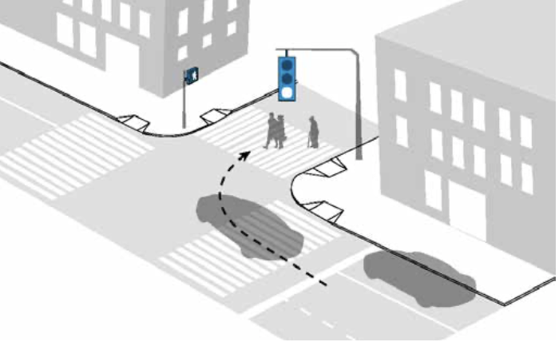

As New York City's senior population grows, their safety is crucial. Although they make up less than 15% of the population, seniors account for over 45% of pedestrian fatalities. The number of senior pedestrian fatalities has remained steady despite Vision Zero efforts. Safety measures like Road Diets, bicycle lanes, pedestrian islands, and leading pedestrian intervals (LPIs) can reduce these injuries.
Click buttons to explore what we made to improve senior pedestrian safety in New York City.
The Senior Pedestrian Zones represent the areas of the city with the highest rate of senior pedestrian injury relative to senior population.
DOT is partnering with Senior Centers across New York City to increase communication and obtain specific feedback from older New Yorkers about the challenges they face and potential street safety improvements.
All corridors in each borough were ranked on a pedestrian KSI (killed and severely injured) per-mile basis. Corridors were selected from the top of this list until the cumulative number of KSI reached half of the borough's total. All Corridors highlight key routes in NYC where efforts are focused to improve pedestrian safety and reduce traffic-related injuries and fatalities.
Removing or narrowing lanes, often referred to as road diets, can reduce traffic speeds and can also reduce pedestrian exposure to moving vehicles. Lane removal typically means converting a four lane road to three lane road: two travel lanes and one turning lane in the middle. This “right-sizing” of the road provides the appropriate number of travel lanes for vehicular demand. Reducing travel to one lane also reduces vehicle speeds and dangerous weaving movements by eliminating the passing lane. Additionally, removing a travel lane means less exposure to traffic when a pedestrian crosses the street. Fewer active travel lanes means fewer interactions between pedestrians and turning vehicles. Turning vehicles are involved in about half of all senior injuries.
Installation of new bike lanes usually coincides with the removal or narrowing of vehicle lanes. Space for bike lanes is typically made from removing parking, removing a travel lane, or narrowing existing lanes, and sometimes a combination of the above. Bike lanes help slow traffic by visually tightening the roadway, and signaling that other road users, particularly vulnerable road users, are present. Painted bike lanes, or Class II lanes appear to greatly reduce the severity of crashes involving senior pedestrians.
Protected bike lanes provide greater safety benefits than conventional bike lanes, greatly reducing KSI and injuries for both seniors and non-senior adults. These lanes are separated from vehicular traffic by hard infrastructure, like plastic bollards/ delineators, painted pedestrian space or a row of parked cars, usually requiring lane or parking removal (or both). At the intersection, protected bike lanes often include pedestrian islands. These islands slow turns, shorten crossing distances for pedestrians and increase pedestrian visibility to drivers.
Concrete pedestrian islands (including variations such as center medians and median tips/extensions) provide refuge, reduce exposure and slow vehicular turns. Islands often divide roads into two travel directions, splitting the crossing into two separate lengths and reducing the crossing distance. This separation gives pedestrians a place to wait safely if they do not have enough time to cross the whole road before signals change. Older pedestrians may also require a longer crossing time than non-senior adults. They may not be able to cross an entire street unless they start at the very beginning of the crossing phase, and so the islands provide a safe place to wait for the next signal.
This category of treatment includes any expansion of the sidewalk and curb with painted pedestrian space or concrete, including neckdowns and block long sidewalk extensions. Curb and sidewalk extensions reduce exposure by reducing crossing distances and can slow turn speeds by changing the angle at which drivers must make the turn. Curb extensions also increase visibility at intersections by putting pedestrians who are about to cross more into the drivers’ field of view, helping to reduce potential failure to yield crashes.
Turn Calming refers to a suite of low-cost interventions deployed at locations with histories of pedestrian and bike injuries involving turning vehicles (mainly left turns). These treatments are used to change the angle of the vehicle turn and to reduce pedestrian exposure in the crosswalk. Rubber speed bumps or plastic bollards are installed on the inside corner of the turn on one-way streets (“slow turn wedge”), or in between travel lanes on two-way streets (“hardened center line”) to force vehicles to make turns at more of a right angle. This angle slows turn speeds and puts pedestrians crossing directly in front of the driver’s point of view, increasing their visibility. The hardened center line also reduces the exposure of the crossing pedestrians to turning vehicles, as most vehicles will turn to avoid the bollards or rubber speed bumps. These treatments strongly benefit senior pedestrians in reducing traffic injuries. It is likely that this treatment benefited seniors more than non-senior adults because it targets a specific crash type (left turning vehicles) that is overrepresented for senior pedestrians in NYC.
An LPI is a traffic signal treatment where a crossing pedestrian receives several seconds of “head start” on the walk signal before parallel vehicular traffic is permitted to move and turn across the crosswalk. LPIs reduce pedestrian exposure and improve yielding rates by separating pedestrian and vehicle movements at intersections and putting pedestrians in a location more visible to drivers when they begin turning. In NYC, this head start is typically seven seconds. Assuming pedestrians begin crossing when their phase begins, pedestrians may be able to cross most of the street, or be at least towards the middle of the crosswalk before any driver starts turning.